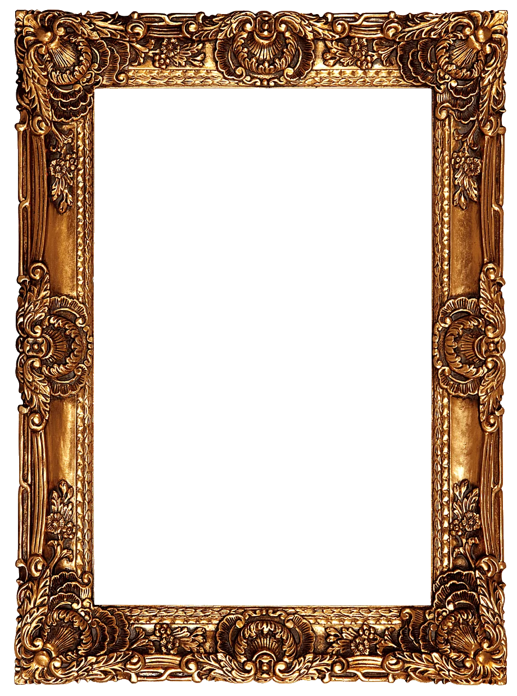

GKS
GABRIEL K. STANISZEWSKI
FROM LUBLIN, OF BOSTON
A future built one heartbeat at a time.
Medical student, aspiring cardiac surgeon, and grandson of people who refused to give up. I study the heart for the simplest reason there is: every beat counts.

Research
Where fluid dynamics meets the failing artery
CFD modeling of arterial stenosis in high school: the project that set the course toward cardiovascular medicine.
Explore the research →
Heritage
A lineage of resilience
Great-grandparents who fought for Poland; grandparents who outlasted communism. Their courage is my compass.
Read the story →
Curriculum vitae
Shared personally, on request
Write to me and I'll send the full CV along with a proper hello.
Request the CV →

GKS. Every beat counts. · Lublin, Poland · staniszewski.gabriel.k@gmail.com
LinkedIn
Instagram